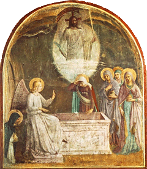
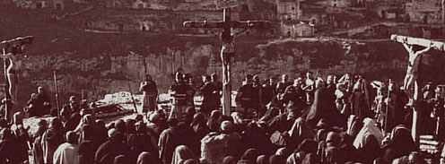
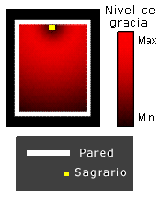
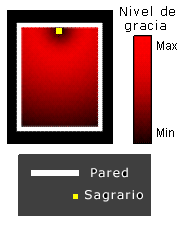
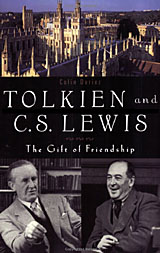
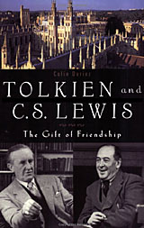

Soy bastante ignorante en cuestiones litúrgicas,
y no es un tema que me enardezca particularmente.
Pero tengo una
fascinación especial (quizás desordenada)
por la liturgia de la Semana Santa; es la época
del año que más espero y que -en general- mejor
vivo. Con el tiempo he venido a reconocer que
mi descubrimiento de esas bellezas hace una docena
de años (primera Pascua post «conversión») se vio
favorecida por una suerte no común: casi siempre me
tocaron parroquias más o menos respetuosas del
rito, sensibles -no hace falta mucha sensibilidad, por otra
parte: es demasiado evidente- a la belleza del asunto.
Este año … también tuve suerte. No me animé a
asistir a «mi parroquia» (ya la misa de Domingo de Ramos
había sido demasiado desastrosa) y me fui a otra de la cual tenía buenos recuerdos.
Pero, el viernes santo decidí «darle una oportunidad»
a mi parroquia e intenté participar del Vía Crucis por las calles
del barrio (El Via crucis «principal» por Av. de Mayo
del año pasado, con locutores onda FM y
esa retórica pomposa y vacía, me espantó para siempre;
me dicen que el de este año no fue mejor).
Error. Ya empezamos mal con el cura «animador»,
(de TV, parecía). Pero no imaginé que llegaría
a pedir, apenas empezado el recorrido que «levantemos las brazos en alto!» mientras cantábamos caminando por la calle.
Calma, me dije; tal vez el pobre se distrajo y olvidó que se trata de un Via Crucis en Viernes Santo; un lapsus…
La mayoría de la gente tuvo el buen tino de no hacerle caso;
tal vez lo peor haya pasado…
Bien; en la siguiente estación, pidió levantar en alto la cruz que llevaban… y cuando yo esperaba un momento de silencio
o alguna «meditación», no va y se le ocurre gritar: «Un aplauso para nuestro Maestro!».
Suficiente para mí, me dije. Sobre todo considerando que estaba a tiempo para el Vía Crucis en la otra parroquia.
El cual fue sencillo y reverente; y con una «representación
viviente» del juicio y la crucifixión (en la plaza) -esas cosas
siempre me parece que van a resultar un papelón, pero
después terminan saliendo bien.
Después, una vigilia de Viernes Santo en la iglesia,
en tinieblas y recogimiento. Con una larga retaíla de canciones
en guitarra y dos voces, sorprendentemente apropiadas y hasta emocionantes.
El sábado a la noche, la Vigilia Pascual estuvo hermosa;
sermón del párroco incluido.
Ya que acá somos un poco criticones, felicitemos cuando
corresponde. Felicitaciones pues al párroco de San José de Flores de Buenos Aires, la chica que cantaba el Viernes Santo
y la parroquia en general.
Archivo por meses: marzo 2005
Salvados, ironías aparte
Es domingo de Pascua. Atiende el teléfono y, con
tono irónico que fija posiciones (él conoce la mía,
debo suponer), me dice : «Veamos… ¿qué había que decir hoy?… Ah. Felices Pascuas. ¿No?».
«… Felices Pascuas», es todo lo que atino a contestar.
Y como si lo anterior no hubiera dejado las cosas suficientemente claras, remarca la burla musitando: «Estamos salvados…!».
Y pasamos a otros temas más mundanos y menos hirientes. A mí me queda el regusto amargo. Y tal vez a él también.
En otro caso —si estuviéramos lejos— la tentación del desprecio habría sido demasiado fuerte; en este caso —estamos muy cerca— no puedo ni quiero despreciar, gracias a Dios.
En otro caso —si yo fuera de esos conversadores hábiles que tienen la réplica fácil— habría sabido contestarle:
«Precisamente: es Pascua de Resurrección, y estamos salvados.«
De esas respuestas que a uno se le ocurren con algunas horas de atraso. Réplica verdadera, aguda, ganadora. Pero ¿útil? ¿edificante? ¿caritativa?.
Puede que sí, puede que no. En mi caso, me temo, más bien habría sido una falta de delicadeza, una forma refinada de desprecio…
Por eso, creo que no tener esa habilidad de disparar respuestas rápidas y agudas es una bendición. Para mí, al menos.
«… Felices Pascuas», es todo lo que atino a contestar.
Y como si lo anterior no hubiera dejado las cosas suficientemente claras, remarca la burla musitando: «Estamos salvados…!».
Y pasamos a otros temas más mundanos y menos hirientes. A mí me queda el regusto amargo. Y tal vez a él también.
En otro caso —si estuviéramos lejos— la tentación del desprecio habría sido demasiado fuerte; en este caso —estamos muy cerca— no puedo ni quiero despreciar, gracias a Dios.
En otro caso —si yo fuera de esos conversadores hábiles que tienen la réplica fácil— habría sabido contestarle:
«Precisamente: es Pascua de Resurrección, y estamos salvados.«
De esas respuestas que a uno se le ocurren con algunas horas de atraso. Réplica verdadera, aguda, ganadora. Pero ¿útil? ¿edificante? ¿caritativa?.
Puede que sí, puede que no. En mi caso, me temo, más bien habría sido una falta de delicadeza, una forma refinada de desprecio…
Por eso, creo que no tener esa habilidad de disparar respuestas rápidas y agudas es una bendición. Para mí, al menos.
Génesis 2-3
Algunas notas para el estudio del relato bíblico de la creación del hombre y la caída, en los foros de «El testigo fiel«.
Alegría y dolor
Escribe Leon Bloy en su diario (El mendigo ingrato, 1895) :
Pascua. Siento frío hasta el centro del alma,
estoy al borde de la desesperación.
Tal es el efecto que me produce esta gran fiesta.
El domingo de Pascua me resulta generalmente doloroso,
y a veces terrible.
Imposible esconder mi tristeza, que se puede expresar más o menos así: No consigo sentir la alegría de la Resurrección, porque la Resurrección no llega jamás para mí. Siempre veo a Jesús en agonía, a Jesús crucificado, y no puedo verlo de otra manera.
Otra del mismo, y del mismo año, que cita Albert Beguin:
Imposible esconder mi tristeza, que se puede expresar más o menos así: No consigo sentir la alegría de la Resurrección, porque la Resurrección no llega jamás para mí. Siempre veo a Jesús en agonía, a Jesús crucificado, y no puedo verlo de otra manera.
Si no sintiera tanto mi miseria, ¿cómo podría
sentir mi alegría, que es la hija mayor de mi miseria,
y que se le parece tanto que da miedo mirarla?
Bloy andaba entonces por los 40 años. En uno de sus últimos libros, alrededor de 70 años, vuelve sobre lo mismo:
Se dice vulgarmente que la alegría es lo contrario del dolor.
¿Cómo hacer comprender que a cierta altura es precisamente la misma cosa?
Y sobre lo mismo (y sobre la Resurrección), otro escritor
muy distante escribirá años más tarde:
… la Resurrección es la mayor «Eucatástrofe» en el mayor
«Cuento de Hadas». Y produce esa emoción esencial:
la alegría que provoca lágrimas, porque
es cualitativamente equivalente al dolor, porque
proviene de unos lugares donde la Alegría y el Dolor
son la misma cosa,
donde el egoísmo y el altruismo son
reconciliados al perderse en el Amor.
J. R. R. Tolkien – Carta 89 a su hijo Christopher, 1944
J. R. R. Tolkien – Carta 89 a su hijo Christopher, 1944
Felices Pascuas

…
Ésta es la noche
de la que estaba escrito:
«Será la noche clara como el día,
la noche iluminada por mí gozo.»
Y así, esta noche santa
ahuyenta los pecados,
lava las culpas,
devuelve la inocencia a los caídos,
la alegría a los tristes,
expulsa el odio,
trae la concordia,
doblega a los poderosos.
…
Pregón pascual (frag.)
…
Ésta es la noche
de la que estaba escrito:
«Será la noche clara como el día,
la noche iluminada por mí gozo.»
Y así, esta noche santa
ahuyenta los pecados,
lava las culpas,
devuelve la inocencia a los caídos,
la alegría a los tristes,
expulsa el odio,
trae la concordia,
doblega a los poderosos.
…
Pregón pascual (frag.)
Sábado Santo
… Porque esto es el Sábado Santo: el día en que Dios se oculta, el día de esa inmensa paradoja que expresamos en el credo con las palabras “descendió a los infiernos”, descendió al misterio de la muerte.
El Viernes Santo podíamos contemplar aún al traspasado; el Sábado Santo está vacío, la pesada piedra de la tumba oculta al muerto, todo ha terminado, la fe parece haberse revelado a última hora como un fanatismo. Ningún Dios ha salvado a este Jesús que se llamaba su hijo. Podemos estar tranquilos; los hombres sensatos, que al principio estaban un poco preocupados por lo que pudiese suceder, al cabo tenían razón.
Sábado Santo, día de la sepultura de Dios.
¿No es éste, de forma especialmente trágica, nuestro día? ¿No comienza a convertirse nuestro siglo en un gran Sábado Santo, en un día de la ausencia de Dios, en el que incluso a los discípulos se les produce un vacío helado en el corazón y por este motivo se disponen a volver a su casa avergonzados y angustiados, sumidos en la tristeza, la apatía y la desesperanza mientras marchan a Emaús, sin advertir que Aquél a quien creen muerto se halla entre ellos?
…
Hay en el Evangelio una escena que anticipa de forma admirable el silencio del Sábado Santo y que, al mismo tiempo, parece como un retrato de nuestro momento histórico. Cristo duerme en un bote, que está a punto de zozobrar asaltado por la tormenta. El profeta Elías había indicado en una ocasión a los sacerdotes de Baal, que clamaban inútilmente a su dios pidiendo un fuego que consumiese los sacrificios, que probablemente su dios estaba dormido y era conveniente gritar con más fuerza para despertarle. ¿Pero no duerme Dios en realidad? La voz del profeta, ¿no se refiere, en definitiva, a los creyentes del Dios de Israel que navegan con Él en un bote zozobrante?
Dios duerme mientras sus cosas están a punto de hundirse. ¿No se asemejan la Iglesia y la fe a un pequeño bote que naufraga y que lucha inútilmente contra el viento y las olas mientras Dios está ausente? Los discípulos, desesperados, sacuden al Señor y le gritan que despierte; pero Él parece asombrarse y les reprocha su escasa fe. ¿No nos ocurre a nosotros lo mismo? Cuando pase la tormenta reconoceremos cuan absurda era nuestra falta de fe.
Y, sin embargo, Señor, no podemos hacer otra cosa que sacudirte a ti, el Dios silencioso y durmiente, y gritarte: ¡despierta!, ¿no ves que nos hundimos? Despierta, haz que las tinieblas del Sábado Santo no sean eternas, envía un rayo de tu luz pascual a nuestros días, ven con nosotros cuando marchemos desesperanzados hacia Emaús, que nuestro corazón arda en tu cercanía. Tú que ocultamente preparaste los caminos de Israel para hacerte al final hombre como nosotros, no nos abandones en la oscuridad, no dejes que tu palabra se diluya en medio de la charlatanería de nuestra época.
…
Nadie puede decir lo que significa en el fondo la frase: “Descendió a los infiernos”. Pero cuando nos llegue la hora de nuestra última soledad captaremos algo del gran resplandor de este oscuro misterio. Con la certeza esperanzadora de que en aquel instante de profundo abandono no estaremos solos, podemos imaginar ya algo de lo que esto significa. Y mientras protestamos contra las tinieblas de la muerte de Dios comenzamos a agradecer esa luz que, desde las tinieblas, viene hacia nosotros.
Joseph Ratzinger
De «Tres meditaciones sobre el Sábado Santo»
El Viernes Santo podíamos contemplar aún al traspasado; el Sábado Santo está vacío, la pesada piedra de la tumba oculta al muerto, todo ha terminado, la fe parece haberse revelado a última hora como un fanatismo. Ningún Dios ha salvado a este Jesús que se llamaba su hijo. Podemos estar tranquilos; los hombres sensatos, que al principio estaban un poco preocupados por lo que pudiese suceder, al cabo tenían razón.
Sábado Santo, día de la sepultura de Dios.
¿No es éste, de forma especialmente trágica, nuestro día? ¿No comienza a convertirse nuestro siglo en un gran Sábado Santo, en un día de la ausencia de Dios, en el que incluso a los discípulos se les produce un vacío helado en el corazón y por este motivo se disponen a volver a su casa avergonzados y angustiados, sumidos en la tristeza, la apatía y la desesperanza mientras marchan a Emaús, sin advertir que Aquél a quien creen muerto se halla entre ellos?
…
Hay en el Evangelio una escena que anticipa de forma admirable el silencio del Sábado Santo y que, al mismo tiempo, parece como un retrato de nuestro momento histórico. Cristo duerme en un bote, que está a punto de zozobrar asaltado por la tormenta. El profeta Elías había indicado en una ocasión a los sacerdotes de Baal, que clamaban inútilmente a su dios pidiendo un fuego que consumiese los sacrificios, que probablemente su dios estaba dormido y era conveniente gritar con más fuerza para despertarle. ¿Pero no duerme Dios en realidad? La voz del profeta, ¿no se refiere, en definitiva, a los creyentes del Dios de Israel que navegan con Él en un bote zozobrante?
Dios duerme mientras sus cosas están a punto de hundirse. ¿No se asemejan la Iglesia y la fe a un pequeño bote que naufraga y que lucha inútilmente contra el viento y las olas mientras Dios está ausente? Los discípulos, desesperados, sacuden al Señor y le gritan que despierte; pero Él parece asombrarse y les reprocha su escasa fe. ¿No nos ocurre a nosotros lo mismo? Cuando pase la tormenta reconoceremos cuan absurda era nuestra falta de fe.
Y, sin embargo, Señor, no podemos hacer otra cosa que sacudirte a ti, el Dios silencioso y durmiente, y gritarte: ¡despierta!, ¿no ves que nos hundimos? Despierta, haz que las tinieblas del Sábado Santo no sean eternas, envía un rayo de tu luz pascual a nuestros días, ven con nosotros cuando marchemos desesperanzados hacia Emaús, que nuestro corazón arda en tu cercanía. Tú que ocultamente preparaste los caminos de Israel para hacerte al final hombre como nosotros, no nos abandones en la oscuridad, no dejes que tu palabra se diluya en medio de la charlatanería de nuestra época.
…
Nadie puede decir lo que significa en el fondo la frase: “Descendió a los infiernos”. Pero cuando nos llegue la hora de nuestra última soledad captaremos algo del gran resplandor de este oscuro misterio. Con la certeza esperanzadora de que en aquel instante de profundo abandono no estaremos solos, podemos imaginar ya algo de lo que esto significa. Y mientras protestamos contra las tinieblas de la muerte de Dios comenzamos a agradecer esa luz que, desde las tinieblas, viene hacia nosotros.
Joseph Ratzinger
De «Tres meditaciones sobre el Sábado Santo»
Viernes Santo

… Esta es la elocuencia definitiva del Viernes Santo:
Hombre, tú que juzgas a Dios, que le ordenas que se justifique ante tu tribunal, piensa en ti mismo, mira si no eres tú el responsable de la muerte de este Condenado, si el juicio contra Dios no es en realidad un juicio contra ti mismo.
Reflexiona y juzga si este juicio y su resultado -la Cruz y luego la Resurrección- no son para ti el único camino de salvación.
Cuando el arcángel Gabriel anunció a la Virgen de Nazaret el nacimiento del Hijo, revelándole que Su Reino no tendría fin, era ciertamente difícil prever que aquellas palabras preludiaban tal futuro: que el Reino de Dios en el mundo se tendría que realizar a un precio tan alto, que desde aquel momento la historia de la salvación de toda la humanidad tendría que seguir un camino semejante.
¿Sólo desde aquel momento? ¿O también desde el inicio?
El evento del Gólgota es un hecho histórico; sin embargo, no está limitado ni en el tiempo ni en el espacio, alcanza el pasado hasta el principio y se abre al futuro hasta el término mismo de la historia. Comprende en sí mismo lugares y tiempos, comprende a todos los hombres.
Cristo es lo que se espera y es, al mismo tiempo, el cumplimiento. …
Juan Pablo II
«Cruzando el umbral de la esperanza»
Hombre, tú que juzgas a Dios, que le ordenas que se justifique ante tu tribunal, piensa en ti mismo, mira si no eres tú el responsable de la muerte de este Condenado, si el juicio contra Dios no es en realidad un juicio contra ti mismo.
Reflexiona y juzga si este juicio y su resultado -la Cruz y luego la Resurrección- no son para ti el único camino de salvación.
Cuando el arcángel Gabriel anunció a la Virgen de Nazaret el nacimiento del Hijo, revelándole que Su Reino no tendría fin, era ciertamente difícil prever que aquellas palabras preludiaban tal futuro: que el Reino de Dios en el mundo se tendría que realizar a un precio tan alto, que desde aquel momento la historia de la salvación de toda la humanidad tendría que seguir un camino semejante.
¿Sólo desde aquel momento? ¿O también desde el inicio?
El evento del Gólgota es un hecho histórico; sin embargo, no está limitado ni en el tiempo ni en el espacio, alcanza el pasado hasta el principio y se abre al futuro hasta el término mismo de la historia. Comprende en sí mismo lugares y tiempos, comprende a todos los hombres.
Cristo es lo que se espera y es, al mismo tiempo, el cumplimiento. …
Juan Pablo II
«Cruzando el umbral de la esperanza»
Donde se le ve más solo
Encuentro que Charles de Foucald, en los comienzos
de su vida religiosa, tuvo como principal guía a Santa
Teresa de Jesús. En particular, en lo que se refiere
a la consideración de Cristo en su humanidad,
el amor al Dios que se anonada.
Dice Teresa en su Vida (cap 9):
Pues ya andaba mi alma cansada y, aunque quería, no le dejaban descansar las ruines costumbres que tenía.
Acaecióme que, entrando un día en el oratorio, vi una imagen que habían traído allá a guardar, que se había buscado para cierta fiesta que se hacía en casa. Era de Cristo muy llagado y tan devota que, en mirándola, toda me turbó de verle tal, porque representaba bien lo que pasó por nosotros. Fue tanto lo que sentí de lo mal que había agradecido aquellas llagas, que el corazón me parece se me partía, y arrojéme cabe El con grandísimo derramamiento de lágrimas, suplicándole me fortaleciese ya de una vez para no ofenderle.
[…]
Tenía este modo de oración: que, como no podía discurrir con el entendimiento, procuraba representar a Cristo dentro de mí, y hallábame mejor a mi parecer en las partes adonde le veía más solo. Parecíame a mí que, estando solo y afligido, como persona necesitada me había de admitir a mí. De estas simplicidades tenía muchas.
En especial me hallaba muy bien en la oración del Huerto. Allí era mi acompañarle. Pensaba en aquel sudor y aflicción que allí había tenido, si podía. Deseaba limpiarle aquel tan penoso sudor. Mas acuérdome que jamás osaba determinarme a hacerlo, como se me representaban mis pecados tan graves. Estábame allí lo más que me dejaban mis pensamientos con El, porque eran muchos los que me atormentaban.
Muchos años, las más noches antes que me durmiese, cuando para dormir me encomendaba a Dios, siempre pensaba un poco en este paso de la oración del Huerto, aun desde que no era monja, porque me dijeron se ganaban muchos perdones. Y tengo para mí que por aquí ganó muy mucho mi alma, porque comencé a tener oración sin saber qué era, y ya la costumbre tan ordinaria me hacía no dejar esto, como el no dejar de santiguarme para dormir…
Acaecióme que, entrando un día en el oratorio, vi una imagen que habían traído allá a guardar, que se había buscado para cierta fiesta que se hacía en casa. Era de Cristo muy llagado y tan devota que, en mirándola, toda me turbó de verle tal, porque representaba bien lo que pasó por nosotros. Fue tanto lo que sentí de lo mal que había agradecido aquellas llagas, que el corazón me parece se me partía, y arrojéme cabe El con grandísimo derramamiento de lágrimas, suplicándole me fortaleciese ya de una vez para no ofenderle.
[…]
Tenía este modo de oración: que, como no podía discurrir con el entendimiento, procuraba representar a Cristo dentro de mí, y hallábame mejor a mi parecer en las partes adonde le veía más solo. Parecíame a mí que, estando solo y afligido, como persona necesitada me había de admitir a mí. De estas simplicidades tenía muchas.
En especial me hallaba muy bien en la oración del Huerto. Allí era mi acompañarle. Pensaba en aquel sudor y aflicción que allí había tenido, si podía. Deseaba limpiarle aquel tan penoso sudor. Mas acuérdome que jamás osaba determinarme a hacerlo, como se me representaban mis pecados tan graves. Estábame allí lo más que me dejaban mis pensamientos con El, porque eran muchos los que me atormentaban.
Muchos años, las más noches antes que me durmiese, cuando para dormir me encomendaba a Dios, siempre pensaba un poco en este paso de la oración del Huerto, aun desde que no era monja, porque me dijeron se ganaban muchos perdones. Y tengo para mí que por aquí ganó muy mucho mi alma, porque comencé a tener oración sin saber qué era, y ya la costumbre tan ordinaria me hacía no dejar esto, como el no dejar de santiguarme para dormir…
Blogs
Dos nuevos (para mí) blogs para notar:
Buena memoria,
de una chilena, cristiana (protestante, por lo que parece).
Escribe lindo.
Quasi palea,
de Tamara; filosofía, teología y literatura. Católica
de orientación tomista, al parecer. Promete.
El derecho a decir banalidades
Es uno de los ensayitos, jóvenes y sabrosos,
de Mircea Eliade, del libro Fragmentarium, que compré y comenté hace poco.
Actualizado: Dos lectores me apuntan el comienzo del último capítulo; es posible; aunque no es propiamente Don Quijote sino el narrador quien lo dice…
Supongo que habrás notado la naturalidad con la que un
pensador paradójico como Unamuno o inquieto como Kierkegaard
afirma cosas tan simples, tan perogrullescas o francamente
triviales.
Siempre me ha asombrado la forma de escribir de Unamuno: a una paradoja difícil o rica en matices le seguirá sin falta una trivialidad o un detalle erudito que otro escritor se avergonzaría de citar por ser demasiado elemental. Con qué seriedad y locuacidad discute Unamuno la etimología de la palabra «agonía», recordándote varias veces que en griego significa «lucha», con el aire de haber descubierto él mismo este significado.
Con qué seriedad cita Kierkegaard textos archiconocidos del Antiguo Testamento, que los protestantes conocen probablemente de memoria, los subraya, los anota y se asombra él mismo de la fuerza que tienen, posponiendo página tras página la excepcional interpretación que tienes la impresión que había prometido…
Y, sin embargo, estos tópicos o trivialidades no molestan en la obra de un Unamuno o un Kierkegaard. Sientes que incluso estas «viejas verdades» habían sido interiorizadas y vividas antes de ser citadas. Sientes que todas las citas triviales que te ofrece un erudito enciclopedista como Unamuno se despojan durante un instante de su gloriosa trivialidad para ser de «carne, hueso y sangre», como él decía. Sientes que pueden alimentar.
Qué decepcionantes son, en cambio, las trivialidades de la obra de un Anatole France, especialmente las que abundan en sus páginas de filosofía escéptica y perfumada. Qué difícil es soportar el tópico en un «clásico» de segunda mano, en un «clásico contemporáneo».
Es evidente que el derecho a decir trivialidades y tópicos se conquista con mucha dificultad. Y los primeros en conquistarlo son los grandes inquietos y despistados del mundo.
Cuando Don Quijote te confiesa que todos los hombres son mortales, estás tan asombrado y emocionado que te entran ganas de llorar.
No estoy seguro de recordar la parte del Quijote
que menciona al final. ¿Alguien me ayuda?Siempre me ha asombrado la forma de escribir de Unamuno: a una paradoja difícil o rica en matices le seguirá sin falta una trivialidad o un detalle erudito que otro escritor se avergonzaría de citar por ser demasiado elemental. Con qué seriedad y locuacidad discute Unamuno la etimología de la palabra «agonía», recordándote varias veces que en griego significa «lucha», con el aire de haber descubierto él mismo este significado.
Con qué seriedad cita Kierkegaard textos archiconocidos del Antiguo Testamento, que los protestantes conocen probablemente de memoria, los subraya, los anota y se asombra él mismo de la fuerza que tienen, posponiendo página tras página la excepcional interpretación que tienes la impresión que había prometido…
Y, sin embargo, estos tópicos o trivialidades no molestan en la obra de un Unamuno o un Kierkegaard. Sientes que incluso estas «viejas verdades» habían sido interiorizadas y vividas antes de ser citadas. Sientes que todas las citas triviales que te ofrece un erudito enciclopedista como Unamuno se despojan durante un instante de su gloriosa trivialidad para ser de «carne, hueso y sangre», como él decía. Sientes que pueden alimentar.
Qué decepcionantes son, en cambio, las trivialidades de la obra de un Anatole France, especialmente las que abundan en sus páginas de filosofía escéptica y perfumada. Qué difícil es soportar el tópico en un «clásico» de segunda mano, en un «clásico contemporáneo».
Es evidente que el derecho a decir trivialidades y tópicos se conquista con mucha dificultad. Y los primeros en conquistarlo son los grandes inquietos y despistados del mundo.
Cuando Don Quijote te confiesa que todos los hombres son mortales, estás tan asombrado y emocionado que te entran ganas de llorar.
Actualizado: Dos lectores me apuntan el comienzo del último capítulo; es posible; aunque no es propiamente Don Quijote sino el narrador quien lo dice…
Diálogo de curas
Del Diario de un cura rural, de Bernanos.
El protagonista (el cura joven, sin mucha formación,
ni salud, ni éxitos, ni alegrías) es sermoneado
por el «cura de Torcy», de más edad y experiencia.
—… Y por lo que respecta a la vida interior, temo que
no reces demasiado. Sufres en exceso para lo que rezas,
esa es mi idea. Hay que alimentarse en proporción a las
fatigas y la plegaria tiene que estar también en relación
con nuestros dolores.
—Es que… ¡no puedo!— grité. Inmediatamente lamenté la confesión, pues su mirada se hizo más dura.
—¡ Si no puedes rezar, inténtalo una y otra vez ! Escucha : yo también he tenido mis dificultades. El diablo llegó a inspirarme tal horror a la oración que me caían grandes gotas de sudor cada vez que recitaba mi breviario… ¿ Comprendes?
—Oh, lo comprendo muy bien — respondí con tal ímpetu, que me examinó largamente de los pies a la cabeza; pero sin malevolencia, sino todo lo contrario…
—Escucha —dijo—, no creo haberme equivocado respecto a ti. Trata de responder a la pregunta que voy a hacerte… No es que mi prueba valga mucho, es tan sólo una idea mía, un medio de reconocerme y algunas veces me ha engañado, como es natural. He reflexionado mucho sobre la vocación. Todos nos hemos sentido llamados, sea, pero no de la misma manera. Y para simplificar las cosas comienzo por situarnos a cada uno de nosotros en su verdadero lugar en el Evangelio. ¡Claro que eso nos rejuvenece dos mil años! Pero el tiempo no es nada para Dios y su mirada lo atraviesa. Me digo a mí mismo que mucho antes de nuestro nacimiento —para hablar en lenguaje humano— Nuestro Señor nos encontró en alguna parte, en Belén, en Nazareth, en los caminos de Galilea… ¿qué sé yo? Un día entre los días, sus ojos se fijaron en nosotros y según el lugar, la hora y la coyuntura, nuestra vocación tomó un carácter particular. Claro que no pretendo dar una formulación teológica a mis palabras. Pero, en fin, pienso… imagino, sueño, ¿por qué no?… que si nuestra alma que no ha olvidado, que lo recuerda siempre, pudiese arrastrar a nuestro pobre cuerpo de siglo en siglo… hacerle remontar esa enorme pendiente de dos mil años, le conduciría directamente a ese mismo lugar donde… ¿Pero qué te ocurre?
Yo no me había dado cuenta de que estaba llorando, ni siquiera me había preocupado de que aquello pudiera suceder.
—¿Por qué lloras?
La verdad es que desde siempre me vuelvo a encontrar en el Monte de los Olivos… y en aquel momento, sí, es extraño, en aquel momento preciso en que posando la mano en el hombro de Pedro, hizo El aquella pregunta —bien inútil, en suma, casi ingenua; pero tan cortés, tan tierna— : ¿Duermes? Era un movimiento anímico muy familiar, muy natural del que hasta aquel momento no me había dado cuenta y de pronto…
—¿Qué es lo que te ocurre? —repitió el cura de Torcy, con impaciencia—. Ni siquiera me escuchas… estás soñando. Quien quiera rezar, amigo mío, no debe soñar. Así la plegaria se diluye en sueño y no hay nada más grave para el alma que esa hemorragia.
Abrí la boca para responder, pero no pude…
—Es que… ¡no puedo!— grité. Inmediatamente lamenté la confesión, pues su mirada se hizo más dura.
—¡ Si no puedes rezar, inténtalo una y otra vez ! Escucha : yo también he tenido mis dificultades. El diablo llegó a inspirarme tal horror a la oración que me caían grandes gotas de sudor cada vez que recitaba mi breviario… ¿ Comprendes?
—Oh, lo comprendo muy bien — respondí con tal ímpetu, que me examinó largamente de los pies a la cabeza; pero sin malevolencia, sino todo lo contrario…
—Escucha —dijo—, no creo haberme equivocado respecto a ti. Trata de responder a la pregunta que voy a hacerte… No es que mi prueba valga mucho, es tan sólo una idea mía, un medio de reconocerme y algunas veces me ha engañado, como es natural. He reflexionado mucho sobre la vocación. Todos nos hemos sentido llamados, sea, pero no de la misma manera. Y para simplificar las cosas comienzo por situarnos a cada uno de nosotros en su verdadero lugar en el Evangelio. ¡Claro que eso nos rejuvenece dos mil años! Pero el tiempo no es nada para Dios y su mirada lo atraviesa. Me digo a mí mismo que mucho antes de nuestro nacimiento —para hablar en lenguaje humano— Nuestro Señor nos encontró en alguna parte, en Belén, en Nazareth, en los caminos de Galilea… ¿qué sé yo? Un día entre los días, sus ojos se fijaron en nosotros y según el lugar, la hora y la coyuntura, nuestra vocación tomó un carácter particular. Claro que no pretendo dar una formulación teológica a mis palabras. Pero, en fin, pienso… imagino, sueño, ¿por qué no?… que si nuestra alma que no ha olvidado, que lo recuerda siempre, pudiese arrastrar a nuestro pobre cuerpo de siglo en siglo… hacerle remontar esa enorme pendiente de dos mil años, le conduciría directamente a ese mismo lugar donde… ¿Pero qué te ocurre?
Yo no me había dado cuenta de que estaba llorando, ni siquiera me había preocupado de que aquello pudiera suceder.
—¿Por qué lloras?
La verdad es que desde siempre me vuelvo a encontrar en el Monte de los Olivos… y en aquel momento, sí, es extraño, en aquel momento preciso en que posando la mano en el hombro de Pedro, hizo El aquella pregunta —bien inútil, en suma, casi ingenua; pero tan cortés, tan tierna— : ¿Duermes? Era un movimiento anímico muy familiar, muy natural del que hasta aquel momento no me había dado cuenta y de pronto…
—¿Qué es lo que te ocurre? —repitió el cura de Torcy, con impaciencia—. Ni siquiera me escuchas… estás soñando. Quien quiera rezar, amigo mío, no debe soñar. Así la plegaria se diluye en sueño y no hay nada más grave para el alma que esa hemorragia.
Abrí la boca para responder, pero no pude…
Una orgía en cuaresma
Alguna vez pensé en armar una página web que listara
las librerías de usados de Buenos Aires. En mis tiempos de
estudiante tenía yo una
especie de adicción, podía pasarme horas (de hecho, las pasaba)
repasando libros viejos en oferta… no de
mis temas de estudiante, precisamente.
Los años me han quitado
algo de tiempo para esos vicios, sin contar el aburguesamiento
(ahora no tengo tanta necesidad de comprar libros de menos
de $5) y que ahora mi inocencia literaria es menor y las sorpresas más raras. Pero
igual, el vicio sigue vivo, y cada tanto (aunque sea en
plena semana santa)
lo despunto. A falta de página-guía completa, vamos a poner
un recorrido posible (en parte lo hice hoy)
que puede resultar de interés a algún hermano en el vicio (se da por conocida la existencia de las
ferias de libros de usados de Buenos Aires: en Parque
Rivadavia, en Parque Centenario, en Plaza Italia,
en Tribunales…)
… Seguir leyendo
… Seguir leyendo
Física, psicología, o qué…
Tom de Disputations se pregunta
por qué consideramos especialmente benéfica
la oración delante del Sagrario donde se guarda
el Santísimo Sacramento.
La Iglesia católica, en efecto, alienta la práctica
de la adoración Eucarística, por lo
cual habría que deducir que esta forma de oración
tiene una «fuerza» especial.
¿De qué se trata? ¿Es algo relacionado con la cercanía del que reza con Jesucristo sacramentado… o no? ¿A menor distancia, mayor gracia ?

Mmmhhmm … no debe ser tan simple la cosa, pues aparentemente (nota Tom) no vale rezar detrás de la pared de la Iglesia… (parece que ejercieran una especie de efecto blindaje…) como tampoco rezar demasiado cerca (digamos a menos de 50 cm: eso sería una impertinencia).
Tom nos regala un gráfico muy útil para nuestras mentes de ingenieros cartesianos (lo copio traducido y retocado) que ilustra la «intensidad» que deberíamos asignar a ese «campo de fuerza» («el rojo indica un mayor «nivel de gracia») según la posición respecto del Sagrario, visto desde arriba.
A algunos les costará tomar en serio ese gráfico, y la idea de que realmente exista una intensidad de gracia con una determinada distribución espacial alrededor del Sagrario.
Entre esos se contarán todos los lectores de este blog… espero.
Ahora bien, si no nos convence esta explicación «física», ¿qué nos queda?
Nos queda la explicación «psicológica», claro. Vamos a ella.
Podemos postular que la oración delante del Sagrario tiene una intensidad especial por factores psicológicos: el orante está en un espacio especialmente sacro —hay un ambiente de silencio y recogimiento, suponemos— y, sobre todo, él por la fe sabe (es conciente de que) tiene frente suyo a Jesús sacramentado. Esto debería predisponer a la devoción, a la conversación interior con la divinidad; a una oración más intensa, y por ende más efectiva.
¿Nos llena esta explicación? Espero que no. Todo eso es seguramente cierto (y cualquier ateo materialista estaría de acuerdo), pero si sólo se trata de eso, la realidad y el misterio se nos escapan de entre los dedos. Son de esas explicaciones (reduccionistas) que, al decir de Chesterton, «explican todo el universo, al precio de tornar al universo indigno de necesitar una explicación». Explicaciones que en lugar de fundamentar, disuelven.
Todo eso podrá parecerme muy satisfactorio para explicar la oración de otros hombres (objetivados); pero de hecho es absolutamente impotente para fundamentar mi oración; yo (yo, Hernán, 38 años, realmente existente, con este cuerpo y esta alma, acá en Buenos Aires, en el año 2005) sé que no rezaría -como rezo- delante del Sagrario si creyera que esa explicación psicológica es la explicación última.
¿Y cuál es esa explicación última ? preguntará algún lector…
Ah… si fuera capaz de contestar eso, no estaría escribiendo en un blog, vea.
Tom intenta una analogía, que me parece bien rumbeada, con el concepto de sacramento:
Por eso, este post de Tom me parece importante, más que por la aplicación particular, como ejemplo. Acá tenemos un caso (no un sacramento, pero un análogo), una realidad sobre la cual nuestra cabeza cartesiana sólo concibe dos alternativas excluyentes: o bien es algo «físico» (y terminamos en el ridículo de gráfico de fuerzas) o bien es algo «psicológico» (y terminamos negando la realidad y la trascendencia). Importa tener conciencia de esta alternativa con que nos tienta nuestra cabeza, para acordarse de que es una alternativa mentirosa. Letal para nuestra vida sacramental, para empezar (pero no solamente, me temo).
Ni física, ni psicología, entonces. O mejor dicho: física, psicología y mucho más.
¿De qué se trata? ¿Es algo relacionado con la cercanía del que reza con Jesucristo sacramentado… o no? ¿A menor distancia, mayor gracia ?

Mmmhhmm … no debe ser tan simple la cosa, pues aparentemente (nota Tom) no vale rezar detrás de la pared de la Iglesia… (parece que ejercieran una especie de efecto blindaje…) como tampoco rezar demasiado cerca (digamos a menos de 50 cm: eso sería una impertinencia).
Tom nos regala un gráfico muy útil para nuestras mentes de ingenieros cartesianos (lo copio traducido y retocado) que ilustra la «intensidad» que deberíamos asignar a ese «campo de fuerza» («el rojo indica un mayor «nivel de gracia») según la posición respecto del Sagrario, visto desde arriba.
A algunos les costará tomar en serio ese gráfico, y la idea de que realmente exista una intensidad de gracia con una determinada distribución espacial alrededor del Sagrario.
Entre esos se contarán todos los lectores de este blog… espero.
Ahora bien, si no nos convence esta explicación «física», ¿qué nos queda?
Nos queda la explicación «psicológica», claro. Vamos a ella.
Podemos postular que la oración delante del Sagrario tiene una intensidad especial por factores psicológicos: el orante está en un espacio especialmente sacro —hay un ambiente de silencio y recogimiento, suponemos— y, sobre todo, él por la fe sabe (es conciente de que) tiene frente suyo a Jesús sacramentado. Esto debería predisponer a la devoción, a la conversación interior con la divinidad; a una oración más intensa, y por ende más efectiva.
¿Nos llena esta explicación? Espero que no. Todo eso es seguramente cierto (y cualquier ateo materialista estaría de acuerdo), pero si sólo se trata de eso, la realidad y el misterio se nos escapan de entre los dedos. Son de esas explicaciones (reduccionistas) que, al decir de Chesterton, «explican todo el universo, al precio de tornar al universo indigno de necesitar una explicación». Explicaciones que en lugar de fundamentar, disuelven.
Todo eso podrá parecerme muy satisfactorio para explicar la oración de otros hombres (objetivados); pero de hecho es absolutamente impotente para fundamentar mi oración; yo (yo, Hernán, 38 años, realmente existente, con este cuerpo y esta alma, acá en Buenos Aires, en el año 2005) sé que no rezaría -como rezo- delante del Sagrario si creyera que esa explicación psicológica es la explicación última.
¿Y cuál es esa explicación última ? preguntará algún lector…
Ah… si fuera capaz de contestar eso, no estaría escribiendo en un blog, vea.
Tom intenta una analogía, que me parece bien rumbeada, con el concepto de sacramento:
Creo que podríamos decir
que la adoración Eucarística es,
informalmente hablando, un sacramento:
el signo de pasar un rato acompañando
a Jesús, realiza lo que significa.
[…]
Así, no es el hecho de estar físicamente cerca del Santísimo lo que hace tan fuerte a la oración delante del Santísimo. Es, pienso, el hecho de que al estar en presencia del Santísimo, significamos —físicamenteo— nuestra cercanía a Cristo. Hacemos uso de la parte material de nuestro ser, reflejando la naturaleza del Sacramento, y disponiendo así un medio para que las gracias infinitas del Sacramento nos sean concedidas.
Naturalmente, (o sobrenaturalmente)
cada vez nos es más difícil comprender lo que es un
sacramento.
Quien más quien menos, todos somos un poco cartesianos;
nuestra cabeza se inclina (como un reflejo) a considerar las cosas
bien como «verdaderamente reales» (física: la objetividad), o bien como «ideales o mentales» (psicología: la subjetividad).
[…]
Así, no es el hecho de estar físicamente cerca del Santísimo lo que hace tan fuerte a la oración delante del Santísimo. Es, pienso, el hecho de que al estar en presencia del Santísimo, significamos —físicamenteo— nuestra cercanía a Cristo. Hacemos uso de la parte material de nuestro ser, reflejando la naturaleza del Sacramento, y disponiendo así un medio para que las gracias infinitas del Sacramento nos sean concedidas.
Por eso, este post de Tom me parece importante, más que por la aplicación particular, como ejemplo. Acá tenemos un caso (no un sacramento, pero un análogo), una realidad sobre la cual nuestra cabeza cartesiana sólo concibe dos alternativas excluyentes: o bien es algo «físico» (y terminamos en el ridículo de gráfico de fuerzas) o bien es algo «psicológico» (y terminamos negando la realidad y la trascendencia). Importa tener conciencia de esta alternativa con que nos tienta nuestra cabeza, para acordarse de que es una alternativa mentirosa. Letal para nuestra vida sacramental, para empezar (pero no solamente, me temo).
Ni física, ni psicología, entonces. O mejor dicho: física, psicología y mucho más.
Lewis, Tolkien y los viajes
Encontré recién un comentario sobre la «Trilogía de Ransom» de C. S. Lewis. No está mal, aunque algún
lector potencial encontrará que revela demasiado
la trama («no me cuentes el final!»);
sólo de las dos primeras novelas, en realidad : «Más allá del planeta silencioso» y «Perelandra».
Yo tengo esa edición, de la «Biblioteca de Ciencia Ficción» de Orbis, tapas azul-plateado. Pero de la primera también tengo otra edición, algo más rara y precaria, del «Grupo editor de Buenos Aires«, colección «Fotón«.
Aquí el título original («Out of the Silent Planet») viene traducido —con alguna demasiada libertad y pretensiosidad— como «Planeta silente». El texto de la contratapa, contiene un reflexión algo despistada, que habría hecho desesperar al bueno de Lewis y que motiva este post. Cito escrupulosamente, respetando hasta las comas:
 La cosa se aclara al leer las cartas de Tolkien [cartas 24, 159, 252y sobre todo 294] , o la biografía por Carpenter.
Año 1936; Tolkien y Lewis eran amigos desde 1927 (en el interín, Lewis se había convertido al cristianismo) y compartían el gusto por los relatos fantásticos con componentes míticas, que echaban en falta en la literatura contemporánea. Ninguno de ellos se consideraba «un escritor», pero, a que al parecer nadie se dignaba a escribir lo que a ellos les gustaría leer, decidieron que ellos mismos tendrían que intentar hacerlo, aunque fuera como aficionados [*]. Se desafiaron mutuamente a escribir una historia cada uno, usando el recurso del «viaje» para contactar un mundo mítico… y acordaron que Lewis lo haría mediante un viaje a través del espacio, y Tolkien a través del tiempo. Lewis escribió entonces su «trilogía de Ramson». Tolkien (que en ese entonces acaba de publicar el Hobbit, y que ya tenía bosquejada buena parte de su mitología -lo que después sería El Silmarillion) intentó un escrito («El camino perdido») que quedó inconcluso; su final luego se transformaría en «La caída de Numenor». Como todos sabemos, Tolkien finalmente decidió que no hacía falta un «viaje» para meternos en su mundo.
Todo esto está contado con bastante detalle en este artículo, «Los viajes en el espacio y en el tiempo de C. S. Lewis y J. R. R. Tolkien«; que entre muchas observaciones interesantes menciona el juicio de Borges:
[* … y la verdad es que a veces uno siente algo parecido, aunque sea en otros aspectos y a otras alturas…]
Yo tengo esa edición, de la «Biblioteca de Ciencia Ficción» de Orbis, tapas azul-plateado. Pero de la primera también tengo otra edición, algo más rara y precaria, del «Grupo editor de Buenos Aires«, colección «Fotón«.
Aquí el título original («Out of the Silent Planet») viene traducido —con alguna demasiada libertad y pretensiosidad— como «Planeta silente». El texto de la contratapa, contiene un reflexión algo despistada, que habría hecho desesperar al bueno de Lewis y que motiva este post. Cito escrupulosamente, respetando hasta las comas:
Avanzamos a pasos agigantados en la conquista del espacio.
Posiblemente se haga con cierta soberbia, que se va transformando
en humildad cuanto más penetramos en el cosmos.
Pero ¿por si acaso [sic] somos también los reyes del cosmos?,
es que es imposible la existencia de otras civilizaciones?,
y si en ellas la moral, las relaciones sociales, hubieran
alcanzado formas más elevadas, más dignas?
Si las comunicaciones entre los miembros de un sociedad y aún entre sociedades fueran más integrales? No sería que deberíamos [sic] entonces considerarnos un PLANETA SILENTE?
Cabe entonces la reflexión del autor: ¡SI EL HOMBRE QUIERE VIAJAR POR EL ESPACIO, TAMBIÉN TENDRIA QUE HACERLO A TRAVES DEL TIEMPO!
No se aflijan si no captan la conexión lógica
de la frase final con lo anterior: no la hay.
Pero el hecho es que esa frase en mayúsculas
figura -con leves variantes- en la novela; es
la frase final. Y la verdad es que
tampoco en la novela —que, contrariamente
al comentario de contratapa, es muy lógica y entendible—
queda muy en claro a qué se refiere. Para mí, al menos.Si las comunicaciones entre los miembros de un sociedad y aún entre sociedades fueran más integrales? No sería que deberíamos [sic] entonces considerarnos un PLANETA SILENTE?
Cabe entonces la reflexión del autor: ¡SI EL HOMBRE QUIERE VIAJAR POR EL ESPACIO, TAMBIÉN TENDRIA QUE HACERLO A TRAVES DEL TIEMPO!
 La cosa se aclara al leer las cartas de Tolkien [cartas 24, 159, 252y sobre todo 294] , o la biografía por Carpenter.
Año 1936; Tolkien y Lewis eran amigos desde 1927 (en el interín, Lewis se había convertido al cristianismo) y compartían el gusto por los relatos fantásticos con componentes míticas, que echaban en falta en la literatura contemporánea. Ninguno de ellos se consideraba «un escritor», pero, a que al parecer nadie se dignaba a escribir lo que a ellos les gustaría leer, decidieron que ellos mismos tendrían que intentar hacerlo, aunque fuera como aficionados [*]. Se desafiaron mutuamente a escribir una historia cada uno, usando el recurso del «viaje» para contactar un mundo mítico… y acordaron que Lewis lo haría mediante un viaje a través del espacio, y Tolkien a través del tiempo. Lewis escribió entonces su «trilogía de Ramson». Tolkien (que en ese entonces acaba de publicar el Hobbit, y que ya tenía bosquejada buena parte de su mitología -lo que después sería El Silmarillion) intentó un escrito («El camino perdido») que quedó inconcluso; su final luego se transformaría en «La caída de Numenor». Como todos sabemos, Tolkien finalmente decidió que no hacía falta un «viaje» para meternos en su mundo.
Todo esto está contado con bastante detalle en este artículo, «Los viajes en el espacio y en el tiempo de C. S. Lewis y J. R. R. Tolkien«; que entre muchas observaciones interesantes menciona el juicio de Borges:
…En una reseña publicada en la revista El Hogar en 1939, al poco de aparecer la primera edición en inglés de Lejos del planeta silencioso, Jorge Luis Borges destacaba la coherencia y la minuciosidad del mundo fantástico de Malacandra, la sensación de verdad que transmite, así como el «espontáneo ambiente poético» que envuelve los trayectos entre la Tierra y Marte.
Este mismo sentimiento de maravilla ante el espacio cósmico fue destacado por Fritz Leiber, según el cual casi se diría que Lewis escribió ateniéndose a lo estipulado por Lovecraft en el breve ensayo «Some Notes on Interplanetary Fiction». Aunque es difícil imaginar dos personalidades más antitéticas que las del creyente Lewis y el ateo materialista Lovecraft…
Este mismo sentimiento de maravilla ante el espacio cósmico fue destacado por Fritz Leiber, según el cual casi se diría que Lewis escribió ateniéndose a lo estipulado por Lovecraft en el breve ensayo «Some Notes on Interplanetary Fiction». Aunque es difícil imaginar dos personalidades más antitéticas que las del creyente Lewis y el ateo materialista Lovecraft…
[* … y la verdad es que a veces uno siente algo parecido, aunque sea en otros aspectos y a otras alturas…]
Nuevas ideas para periodistas ambiciosos
Ya saben mis lectores que yo trato de escaparle a los
«temas de actualidad», sobre todo si hay política de por medio. Pero esto del obispo castrense tiene su lado cómico, y
también es ilustrativo de la realidad argentina.
O sea: es una buena caricatura.
Los argentinos ya están al tanto (mal o bien); tal vez les sirva a los de afuera para conocer un poco nuestra situación… (aunque para eso debería hacer un brevísimo resumen histórico-político del país… tal vez mañana).
Repasemos. El 17 de febrero, Monseñor Baseotto, obispo castrense, escribe una carta (pública) al ministro de salud de la Argentina. El tal ministro es un entusiasta propulsador de la moral sexual progresista, por llamarla de alguna manera; aborto incluido. El obispo es más bien conservador y no muy político. El párrafo de la carta en cuestión dice literalmente (pueden ver el original completo):
Pero… aunque parezca increíble, el gobierno y los medios decidieron que el obispo proponía tirar al ministro al mar por su posición abortista, y que encima la imagen era una alusión macabra a los «vuelos de la muerte» (esto forma parte de la mitología política argentina, a explicar otro día; baste por ahora saber que durante una dictadura militar se ejecutó a detenidos arrojándolos desde aviones al Río de la Plata…). En realidad, como verán, nadie se animó a decir que el obispo pensaba en eso; pero bueno, lo pensamos nosotros (los que enseñamos a pensar), y basta. El gobierno protestó ante el Vaticano, y ante la falta de respuesta (mejor dicho, ante el apoyo) decidió -en nuestro mejor estilo presidencial- «despedirlo».
Es fascinante repasar algunos titulares de los diarios más vendidos, y más «moderados» de nuestro país (pueden imaginarse los más panfletarios). En aproximado orden cronológico; nótese cómo progresa la fidelidad en la cita y la interpretación:
¿Por qué detenernos acá? Vamos por más. Para periodistas ambiciosos que —buscando atraerse la atención de sus lectores, alentar la pasión anticlerical y ganarse el favor de los que mandan— les esté faltando imaginación, acá les proponemos nuevas versiones:
[* Curiosamente, la primera nota de Clarín entendió bien ese punto]
Los argentinos ya están al tanto (mal o bien); tal vez les sirva a los de afuera para conocer un poco nuestra situación… (aunque para eso debería hacer un brevísimo resumen histórico-político del país… tal vez mañana).
Repasemos. El 17 de febrero, Monseñor Baseotto, obispo castrense, escribe una carta (pública) al ministro de salud de la Argentina. El tal ministro es un entusiasta propulsador de la moral sexual progresista, por llamarla de alguna manera; aborto incluido. El obispo es más bien conservador y no muy político. El párrafo de la carta en cuestión dice literalmente (pueden ver el original completo):
La multiplicación de los abortos que usted propicia con fármacos conocidos como abortivos es apología del delito de homicidio… Cuando usted repartió públicamente profilácticos a los jóvenes, recordaba el texto del Evangelio donde nuestro Señor afirma que “los que escandalizan a los pequeños merecen que le cuelguen una piedra de molino al cuello y lo tiren al mar”…
Se refiere, claro, a la conocida frase de Jesús
que figura en los tres sinópticos. No me parece que sea gran cosa la carta
(en realidad, no me gusta mucho) y quizás la cita sea poco inteligible para los destinatarios.
Pero cualquiera que lea la carta puede entender
que la acusación de «escandalizador» se refiere
al papel de «educador sexual» que el gobierno pretende
arrogarse (tipificado, y no es mala tipificación, en la imagen
de «repartidor de profilácticos»), no en la legalización
del aborto [*]. Se trata de que, para el obispo
(y para mí) la «educación sexual» entendida al modo
que la entienden los ideólogos de este gobierno no está muy lejos de la «corrupción de menores» (no pretendo
que otros estén de acuerdo… sí puedo pretender que sigan el razonamiento!); y antes que corromper a un niño más te valdría
(es decir, te sería preferible, por el bien de tu propia alma)
que te colgaran una piedra al cuello y te tiraran al mar.
Por ahí, es de creer, apunta la hipérbole de Jesús.
Pero… aunque parezca increíble, el gobierno y los medios decidieron que el obispo proponía tirar al ministro al mar por su posición abortista, y que encima la imagen era una alusión macabra a los «vuelos de la muerte» (esto forma parte de la mitología política argentina, a explicar otro día; baste por ahora saber que durante una dictadura militar se ejecutó a detenidos arrojándolos desde aviones al Río de la Plata…). En realidad, como verán, nadie se animó a decir que el obispo pensaba en eso; pero bueno, lo pensamos nosotros (los que enseñamos a pensar), y basta. El gobierno protestó ante el Vaticano, y ante la falta de respuesta (mejor dicho, ante el apoyo) decidió -en nuestro mejor estilo presidencial- «despedirlo».
Es fascinante repasar algunos titulares de los diarios más vendidos, y más «moderados» de nuestro país (pueden imaginarse los más panfletarios). En aproximado orden cronológico; nótese cómo progresa la fidelidad en la cita y la interpretación:
-
Primer tiempo:
- Clarin – 19-2 El obispo castrense dijo que el ministro de Salud merecería ser «tirado al mar».
- Clarín 20-2 Pampuro citó al obispo que quiere tirar un ministro al mar – «… unas declaraciones que, lejos de llevar un mensaje de paz y armonía a las Fuerzas Armadas, incentivan los desencuentros con alegorías poco felices y connotaciones muy fuertes para los argentinos»
- Clarín 22-2 El obispo castrense dijo que habría que «tirar al mar» al ministro de Salud por sus opiniones sobre el aborto.
- La Nación 23-2 El obispo castrense había criticado duramente al ministro de Salud, Ginés González García, por su postura en favor de la despenalización del aborto; «Hay que colgarle una piedra al cuello y tirarlo al mar«, fue la frase que disparó la polémica.
- Clarín 24-2 Kirchner le pide a Juan Pablo II que eche al obispo castrense – Monseñor Baseotto se enfrentó duramente con el ministro de Salud por su opinión sobre el aborto. Y dio a entender que había que tirar al funcionario al mar. Ayer intentó una disculpa, pero ésta llegó tarde.
- Clarín 18-3 … Hizo una cita bíblica: «los que escandalizan a los pequeños merecen que les cuelguen una piedra de molino al cuello y los tiren al mar». La familiaridad [sic] con los métodos de desaparición de la última dictadura provocó escozor. Kirchner no demoró en pedir su separación.
- Clarín 19-3 El Gobierno retiró el aval y despojó de sus atribuciones al obispo castrense Antonio Baseotto, lo que lo deja virtualmente fuera del cargo. El religioso había recomendado tirar al mar al ministro de Salud.
- La Nación 18-3 Fernández, en tanto, atribuyó la decisión de Kirchner a las declaraciones de Baseotto que, dijo, «se convirtieron en alegorías con connotaciones muy fuertes [sic] porque básicamente sus expresiones recordaron que se debía hacer algo muy parecido a lo que ocurrió en los años negros de la Argentina cuando se hacían los ´vuelos de la muerte´». Baseotto había declarado, en medio de una polémica sobre el aborto, que al ministro de Salud, Ginés González García, había que “atarle una piedra al cuello y tirarlo al río”.
Intermedio
En el medio de la movida, la DAIA (organización judía) no quiso dejar de participar: Ahora que lo dicen este Baseotto a nosotros tampoco nos gusta; allá por 1986… sí, hay que echarlo, estamos con el gobierno. Y esta perla, también muy representativa: piden que remuevan al obispo culpándolo de tener «una ideología nefasta», y unas líneas antes lo habían acusado de exhibir «una personalidad incapaz de aceptar ideologías diferentes».
Segundo tiempo:
¿Por qué detenernos acá? Vamos por más. Para periodistas ambiciosos que —buscando atraerse la atención de sus lectores, alentar la pasión anticlerical y ganarse el favor de los que mandan— les esté faltando imaginación, acá les proponemos nuevas versiones:
- «En sus polémicas declaraciones, monseñor Baseotto había declarado que al ministro había que «atarle una piedra al cuello y tirarlo al Río de la Plata«»
- «…monseñor Baseotto espetó que «a este ministro hay que hacerle unos zapatos de cemento, subirlo al avión, picanearlo y tirarlo al Río de la Plata»»
- «El epicospado propone torturar al ministro de salud y hacerlo desaparecer, arrojándolo al río desde un avión»
- «La Iglesia argentina enseña que es justo y cristiano matar a los que quieren despenalizar el aborto, tirándolos desde un avión».
- «La Iglesia cambia sus métodos: en lugar de quemar en la hoguera a los que piensan diferente, ahora quieren tirarlos al río con una piedra al cuello» (éste bien puede hacer ganar un ascenso en Página 12; no me agradezcan).
[* Curiosamente, la primera nota de Clarín entendió bien ese punto]
Imaginaciones imaginarias
No deja de sorprenderme ese estribillo publicitario:
«tu imaginación«; esos slogans que parecen implicar que
la imaginación del hombre común es
un manantial caudaloso e inagotable…
Yo no estoy seguro del resultado… no quiero ser pesimista, a lo mejor estoy proyectando mis propias limitaciones al resto de los hombres. Tal vez la imaginación de la típica adolescente antedicha sea, en efecto, un manantial de maravillas y bellezas nunca vistas. Pero la verdad es que no es mi caso. Yo no tengo imaginación. (Quizás alguna vez imaginé tenerla… pero ese es otro asunto). Cuando voy a ver una película, o a leer una novela, no espero que «el límite sea mi imaginación» (sería un aburrimiento mortal), espero mucho más que eso, espero ver cosas que otros imaginaron.
Y les confieso más: creo que si me hubieran encargado a mí crear el universo, si yo hubiera tenido que imaginar los animales, los planetas, los colores, los hombres… no estoy seguro, pero creo que no se me hubieran ocurrido cosas mucho mejores que estas que tenemos. Será por eso que estoy conforme y contento con el universo.
Por eso, también, comprendo que tantos chicos -tantas lectoras de Rayuela- sientan tan poco aprecio y admiración por el cosmos que les ha tocado en suerte: es claro, no pueden evitar compararlo con el cosmos que hay en su imaginación.
Es de suponer, además, que gente como San Francisco de Asís y Simone Weil tampoco tenían mucha imaginación.
«…El único límite es tu imaginación ! …»
«…tan grande como tu imaginación…»
«…con las alas de tu imaginación…»
Experimento pensado: tomamos una persona de la calle
al azar (preferiblemente una adolescente típica, con toda la energía
joven y los sueños … etc) y le otorgamos una varita mágica que le
para que pueda hacer realidad las cosas que viven en su imaginación.
«…tan grande como tu imaginación…»
«…con las alas de tu imaginación…»
Yo no estoy seguro del resultado… no quiero ser pesimista, a lo mejor estoy proyectando mis propias limitaciones al resto de los hombres. Tal vez la imaginación de la típica adolescente antedicha sea, en efecto, un manantial de maravillas y bellezas nunca vistas. Pero la verdad es que no es mi caso. Yo no tengo imaginación. (Quizás alguna vez imaginé tenerla… pero ese es otro asunto). Cuando voy a ver una película, o a leer una novela, no espero que «el límite sea mi imaginación» (sería un aburrimiento mortal), espero mucho más que eso, espero ver cosas que otros imaginaron.
Y les confieso más: creo que si me hubieran encargado a mí crear el universo, si yo hubiera tenido que imaginar los animales, los planetas, los colores, los hombres… no estoy seguro, pero creo que no se me hubieran ocurrido cosas mucho mejores que estas que tenemos. Será por eso que estoy conforme y contento con el universo.
Por eso, también, comprendo que tantos chicos -tantas lectoras de Rayuela- sientan tan poco aprecio y admiración por el cosmos que les ha tocado en suerte: es claro, no pueden evitar compararlo con el cosmos que hay en su imaginación.
Es de suponer, además, que gente como San Francisco de Asís y Simone Weil tampoco tenían mucha imaginación.
Bibliofilias
Libros comprados esta semana:
Dorothy Sayers: Obras escogidas.
Son cinco novelas policiales. La conocí hace poco a través
de dos novelas en inglés, me gustó sobre todo la segunda
(Gaudy Night) [*] me gustó
pero se me hizo un poco cuesta arriba con el idioma. Esta
edición de Aguilar (1380 pags, me encantan esos libros gordos)
viene con una rara tapa fucsia de plástico, que será muy
práctica y durable, pero también tiene algo de innoble…
(es la primera vez que lavo un libro con trapo y detergente).
J. F. Six: Itinerario espiritual de Charles de Foucald
Venía con ganas de saber más de este «fray Carlos» .
Hace un par de años, en una cena unos curas que sabían de esto
me recomendaron un biógrafo de Foucald y me desrecomendaron otro;
lo único que creo recordar es que este Six era uno de ellos…
Espero tener suerte.
Urs von Balthasar: Puntos centrales de la fe
Un tomito de la BAC. Lo estuve hojeando y se ve muy interesante.
Félix Luna: La cultura en la Colonia . La cultura desde la Independencia hasta el Centenario Dos libritos de historia argentina,
de Planeta, que andan en oferta. Un poco escuálidos, pero
algo me han aportado.
E. S. Salor: Polémica entre cristianos y paganos Un rejuntado,
clasificado y comentado, de los textos apologéticos/polémicos
del cristianismo contra los ataques del paganismo romano.
[* Casualmente, veo que Gaudy Night (libro que jamás había oído nombrar) aparece mencionado por Donald Knuth -un prócer de la computación- entre sus favoritos; del resto, no conozco ninguno]
[* Casualmente, veo que Gaudy Night (libro que jamás había oído nombrar) aparece mencionado por Donald Knuth -un prócer de la computación- entre sus favoritos; del resto, no conozco ninguno]
Argumentos de venta
Aquello de pensar -o mejor dicho: sentir- la Iglesia como un
partido, puede darse tanto en su relación al mundo incrédulo,
como en relación a otras religiones. En este segundo caso,
esta concepción, que nos lleva a desear
el crecimiento (numérico) de la religión católica por sobre
todo (por sobre la verdad y el amor), podría verse -creo yo- como
lo opuesto al ecumenismo.
Veamos con un ejemplo.
Todos sabemos que por acá (digamos, este continente americano) la religión cristiana está dividida principalmente en católicos y protestantes. Los católicos, claro está, creemos que nuestra religión es la verdadera, y nos alegramos de que la mayoría de los habitantes actuales de iberoamérica sean (al menos culturalmente, o nominalmente) católicos; y nos entristecemos si vemos que iglesias protestantes (evangélicos y pentecostales) van teniendo más penetración, entre la gente humilde sobre todo. Bien. Por otro lado, nos alegra que el catolicismo le otorgue tanto lugar a la Virgen María, en el dogma y en la devoción popular, contrariamente a la indiferencia -cuando no hostilidad- de los protestantes.
Ahora bien … resulta que un día nos enteramos de que hay muchos protestantes que están reconsiderando eso, que lentamente va creciendo la simpatía, el respeto y hasta la devoción mariana… Supongamos que damos por correcta la noticia, y más: (supongamos, dije!) que los protestantes van camino a ser tan marianos como los católicos. ¿Cuál sería nuestra (católica) reacción? ¿Qué nos diría nuestro corazón?
Algunas posibilidades que se me ocurren… en orden:
a. Buenísmo, alabado sea Dios. Es hermoso que más cristianos recen a María, que sean más las generaciones que «la llaman bienaventurada», y que su intercesión pueda ayudar a más hombres «a alcanzar las promesas de Cristo».
b. Bien. Esto va a ayudar a romper uno de los varios prejuicios e incomprensiones que nos separan; que católicos y protestantes podamos rezar juntos a María sería un paso enorme hacia la unidad de los cristianos.
c. Bueno. Por fin… los protestantes terminan reconociendo que los católicos no éramos ningunos idólatras por rezar a María. Teníamos razón, punto para nosotros. Ojalá sea el primer paso para que se den cuenta de que la Iglesia católica, y sólo la Iglesia católica, tiene la verdad, y que vean la necesidad de convertirse.
d. Es una maniobra estratégica, hipócrita e indignante. Claro… tanto tiempo queriendo meterse en la América hispana, y chocando siempre contra la devoción mariana popular… La verdad que para mí era un consuelo y una seguridad, frente a los avances de estos evangélicos, ver tantos rosarios y estampitas marianas en la gente humilde, las peregrinaciones a Luján… Los protestantes nunca podrán ganar terreno acá, pensaba yo. Y ahora nos salen con esto; quién los para ahora. Es para angustiarse.
Un poco de todo esto, con distintas palabras, habrá en el corazón de cada uno. Pero cuando las últimas (sobre todo la última) hablan más fuerte, cuando las escuchamos y les creemos, estamos viendo a la Iglesia como un partido.
No estoy seguro, pero me temo que esto que dice este sacerdote para justificar esadeplorable dudosa devoción a «San Expedito»
puede ser un ejemplo. «…este santo ha acercado muchísimo a la gente a nuestra Iglesia», dice… (pero, quién sabe; quizás ni siquiera esté
pensando en la Iglesia como un partido: tal vez esté pensando en el templo, nomás.)
Veamos con un ejemplo.
Todos sabemos que por acá (digamos, este continente americano) la religión cristiana está dividida principalmente en católicos y protestantes. Los católicos, claro está, creemos que nuestra religión es la verdadera, y nos alegramos de que la mayoría de los habitantes actuales de iberoamérica sean (al menos culturalmente, o nominalmente) católicos; y nos entristecemos si vemos que iglesias protestantes (evangélicos y pentecostales) van teniendo más penetración, entre la gente humilde sobre todo. Bien. Por otro lado, nos alegra que el catolicismo le otorgue tanto lugar a la Virgen María, en el dogma y en la devoción popular, contrariamente a la indiferencia -cuando no hostilidad- de los protestantes.
Ahora bien … resulta que un día nos enteramos de que hay muchos protestantes que están reconsiderando eso, que lentamente va creciendo la simpatía, el respeto y hasta la devoción mariana… Supongamos que damos por correcta la noticia, y más: (supongamos, dije!) que los protestantes van camino a ser tan marianos como los católicos. ¿Cuál sería nuestra (católica) reacción? ¿Qué nos diría nuestro corazón?
Algunas posibilidades que se me ocurren… en orden:
a. Buenísmo, alabado sea Dios. Es hermoso que más cristianos recen a María, que sean más las generaciones que «la llaman bienaventurada», y que su intercesión pueda ayudar a más hombres «a alcanzar las promesas de Cristo».
b. Bien. Esto va a ayudar a romper uno de los varios prejuicios e incomprensiones que nos separan; que católicos y protestantes podamos rezar juntos a María sería un paso enorme hacia la unidad de los cristianos.
c. Bueno. Por fin… los protestantes terminan reconociendo que los católicos no éramos ningunos idólatras por rezar a María. Teníamos razón, punto para nosotros. Ojalá sea el primer paso para que se den cuenta de que la Iglesia católica, y sólo la Iglesia católica, tiene la verdad, y que vean la necesidad de convertirse.
d. Es una maniobra estratégica, hipócrita e indignante. Claro… tanto tiempo queriendo meterse en la América hispana, y chocando siempre contra la devoción mariana popular… La verdad que para mí era un consuelo y una seguridad, frente a los avances de estos evangélicos, ver tantos rosarios y estampitas marianas en la gente humilde, las peregrinaciones a Luján… Los protestantes nunca podrán ganar terreno acá, pensaba yo. Y ahora nos salen con esto; quién los para ahora. Es para angustiarse.
Un poco de todo esto, con distintas palabras, habrá en el corazón de cada uno. Pero cuando las últimas (sobre todo la última) hablan más fuerte, cuando las escuchamos y les creemos, estamos viendo a la Iglesia como un partido.
No estoy seguro, pero me temo que esto que dice este sacerdote para justificar esa
Editando a von Speyr
Curiosidad: una «Fundacion San Juan«,
radicada en Rafaela (provincia de Santa Fe, Argentina) cuya
finalidad es «la edición de la obra de
Adrienne von Speyr para los hombres de habla hispana«.
Adrienne von Speyr, médica, mística y conversa del protestantismo, es conocida sobre todo por haber sido la guía inspiradora del teólogo Urs von Balthasar. Si von Balthasar despierta algunos reparos en muchos teólogos católicos, von Speyr inspira menos confianza aun, por lo que he podido ver. Yo sólo leí algunas páginas de ella, y no logré engancharme, pero no la descarto…
Pero, opiniones aparte… gentes que en estos tiempos y en estos lugares, emprenden estos esfuerzos, automáticamente se ganan todas mis simpatías.
Adrienne von Speyr, médica, mística y conversa del protestantismo, es conocida sobre todo por haber sido la guía inspiradora del teólogo Urs von Balthasar. Si von Balthasar despierta algunos reparos en muchos teólogos católicos, von Speyr inspira menos confianza aun, por lo que he podido ver. Yo sólo leí algunas páginas de ella, y no logré engancharme, pero no la descarto…
Pero, opiniones aparte… gentes que en estos tiempos y en estos lugares, emprenden estos esfuerzos, automáticamente se ganan todas mis simpatías.
Los partidos y la verdad
… La finalidad de un partido político es algo vago e irreal.
Si fuera real, exigiría un esfuerzo muy grande de atención,
pues una concepción del bien público no es algo fácil de pensar.
La existencia del partido es palpable, evidente, y no exige
ningún esfuerzo para ser reconocida. Así, es inevitable
que de hecho sea el partido para sí mismo su propia
finalidad.
En consecuencia, hay idolatría, pues solo Dios es legítimamente un fin en sí mismo.
A esto se llega fácilmente. Se pone como axioma que la condición necesaria y suficiente para que el partido sirva a la concepción del bien público con vistas a la cual existe es que posea una gran cantidad de poder.
Pero ninguna cantidad finita de poder puede jamás, de hecho, ser mirada como suficiente, sobre todo una vez obtenida. En la realidad, el partido se encuentra en un estado continuo de impotencia que atribuye siempre a la insuficiencia del poder de que dispone. Aun cuando fuera el dueño absoluto del país, las necesidades internacionales serían las que impondrían límites.
[…]
No se puede servir a Dios y a Mammon. Si se tiene un criterio del bien distinto del bien, se pierde la noción del bien.
Desde el momento en que el crecimiento del partido constituye un criterio del bien, se sigue forzozamente la existencia de una presión colectiva sobre el pensamiento de los hombres. Esa presión de hecho se ejerce. Se muestra en público. Se confiesa, se proclama. Debería horrorizarnos, si la costumbre no nos hubiera embrutecido.
Se ejerce la presión sobre el gran público mediante la propaganda. La finalidad confesada de la propaganda es persuadir, no comunicar luz. Hitler vio perfectamente que la propaganda es siempre un intento de someter espíritus. Y todos los partidos hacen propaganda. […]
… se considera totalmente natural, razonable y honorable, que alguien diga «como conservador … -o como socialista- pienso que … «.
Y esto, en verdad, no sólo lo hacen los partidos. Tampoco se avergüenza quien dice «Como francés, pienso que…», o «Como católico, pienso que…».
Simone Weil – Escritos de Londres
En consecuencia, hay idolatría, pues solo Dios es legítimamente un fin en sí mismo.
A esto se llega fácilmente. Se pone como axioma que la condición necesaria y suficiente para que el partido sirva a la concepción del bien público con vistas a la cual existe es que posea una gran cantidad de poder.
Pero ninguna cantidad finita de poder puede jamás, de hecho, ser mirada como suficiente, sobre todo una vez obtenida. En la realidad, el partido se encuentra en un estado continuo de impotencia que atribuye siempre a la insuficiencia del poder de que dispone. Aun cuando fuera el dueño absoluto del país, las necesidades internacionales serían las que impondrían límites.
[…]
No se puede servir a Dios y a Mammon. Si se tiene un criterio del bien distinto del bien, se pierde la noción del bien.
Desde el momento en que el crecimiento del partido constituye un criterio del bien, se sigue forzozamente la existencia de una presión colectiva sobre el pensamiento de los hombres. Esa presión de hecho se ejerce. Se muestra en público. Se confiesa, se proclama. Debería horrorizarnos, si la costumbre no nos hubiera embrutecido.
Se ejerce la presión sobre el gran público mediante la propaganda. La finalidad confesada de la propaganda es persuadir, no comunicar luz. Hitler vio perfectamente que la propaganda es siempre un intento de someter espíritus. Y todos los partidos hacen propaganda. […]
… se considera totalmente natural, razonable y honorable, que alguien diga «como conservador … -o como socialista- pienso que … «.
Y esto, en verdad, no sólo lo hacen los partidos. Tampoco se avergüenza quien dice «Como francés, pienso que…», o «Como católico, pienso que…».
Y con esa última frase uno no puede dejar de releer todo lo anterior reemplazando «partido» por «Iglesia» ; y la Iglesia puede ser seguida como un partido, no es novedad. Ojo con la propaganda, entonces.
El idioma de los jóvenes K
Los carteles, firmados los Jóvenes K, una agrupación afín al presidente Néstor Kirchner, muestran sobre fondo negro un logo de la firma Shell tachado.
En el texto, la agrupación pide que «a los que suben los precios no les compres«.
«Comprale a otros. Defendé tu bolsillo y al país«, instan los jóvenes oficialistas.
… dice La Nación;
que -curiosamente- tiene la gentileza de corregir el error gramatical
en la primera frase (el afiche en realidad dice
«a los que suben los precios no le compres«,
como puede verse
),
aunque no lo corrige en la segunda («Comprale a otros«)
En el texto, la agrupación pide que «a los que suben los precios no les compres«.
«Comprale a otros. Defendé tu bolsillo y al país«, instan los jóvenes oficialistas.
Y la última frase me despertó dudas… usar «a» para preceder un objeto directo y no para el otro… —hubiera sido magnífico, tres errores en tres frases— pero, pensándolo un poco y consultando el mataburros, me parece que puede pasar: «defender el país» parece mejor que «defender al país» pero… eso puede pasar, creo yo.
Lo otro, no.
Y ya que estamos con Google, una curiosidad: son más las citas periodísticas que corrigen la frase del afiche, que las que reproducen el error.
Buenas razones
…Que algunos hombres hayan podido enamorarse de esta
letrina es una buena prueba del rebajamiento de los hombres
de este siglo. Ver el prefacio de Mademoiselle La Quintinie…
Tiene buenas razones para querer suprimir el infierno.
…No puedo pensar en esa criatura estúpida sin un estremecimiento de horror. Si la encontrara no podría evitar arrojarle una pila de agua bendita por la cabeza.
…No puedo pensar en esa criatura estúpida sin un estremecimiento de horror. Si la encontrara no podría evitar arrojarle una pila de agua bendita por la cabeza.
De las anotaciones póstumas, característicamente energúmenas, del gran Charles Baudelaire, refiriéndose a la (entonces considerada grande) escritora George Sand.
Entre sus enamorados —y más que enamorado— se contó el pobre Chopin.
Mademoiselle La Quintinie es una novela (olvidada hoy, como la obra de George Sand en general) de inspiración anticlerical, en cuyo prólogo la intelectual estampó este pensamiento:
… para no citar más que uno de los artículos de fe de la Iglesia,
nosotros nos preguntamos si el espíritu de Dios forma parte de ella
cuando nos ordena creer en la existencia del diablo y en las penas
eternas del infierno.
Era el año 1863, y la autora estaba cerca de los 60 años. Testigos presenciales
— Oh, Boogie ¿Es cierto que esta es una ciudad violenta ?
— No creas en todo lo que te cuenten los familiares de las víctimas.
La respuesta es de «Boogie, el aceitoso», la creación de Fontanarrosa.
— No creas en todo lo que te cuenten los familiares de las víctimas.
Si bien se mira, no es menos absurda y cómica esta otra respuesta, que el mundo sin embargo da por buena:
—¿Es verdad que hay una vida sobrenatural? ¿Es verdad que Dios nos escucha, nos habla, nos ama?
— No creas en todo lo que te cuenten los santos.
La comicidad en ambos casos reside en que la estructura de la respuesta (la típica frase con la que uno pone en duda la opinión de un testigo «interesado») no puede esconder lo obvio: acá la opinión es secundaria, lo que en verdad responde la pregunta es la misma existencia del testigo; es su condición la que fundamenta la respuesta.
No se trata de «lo que dicen» esos testigos, se trata de lo que son.
Oscuramente, creo recordar que Simone Weil (o era Pascal?) decía algo parecido… Tendré que buscar….
La Trinidad y el Padre
… no es lícito llamar «Padre» a la Trinidad,
a no ser en sentido traslaticio,
respecto de la criatura según la adopción
filial.
San Agustín, en su tratado De la Trinidad.
La tumba de las luciérnagas
Sigo descubriendo bellezas, inesperadas para mí, en la animación
japonesa. Vi esta semana (gracias
al lector que me la recomendó) La tumba de las luciérnagas,
otra película de los estudios Ghibli (creadores también de «El viaje de Chihiro» y «La princesa
Mononoke»). Esta es de otro director, y el
estilo más realista y más duro. Historia basada en una novela,
muy simple y muy triste
(me recordó alguna cosa de Dickens; pero esto es menos novelesco,
sin buenos ni malos; y acaso por eso mismo, más triste).
Transcurre en Kobe (Japón), año 1945; un chico de 12 años obligado a cuidar de su hermana de 5 después de la muerte de la madre (el padre está en la marina de guerra). Típica historia de los
huérfanos: hartos de la pobre y cada vez más hostil acogida de una tía,
se van a vivir en un refugio antibombas. El hermano
no logra salir adelante (intenta hasta el robo para sobrevivir)
y la niña muere de desnutrición.
Todo está contado con los ojos de los rei (espíritus)
de los hermanos, que tras la muerte del niño, salen a recorrer los lugares y contemplar el pasado.
(el padre está en la marina de guerra). Típica historia de los
huérfanos: hartos de la pobre y cada vez más hostil acogida de una tía,
se van a vivir en un refugio antibombas. El hermano
no logra salir adelante (intenta hasta el robo para sobrevivir)
y la niña muere de desnutrición.
Todo está contado con los ojos de los rei (espíritus)
de los hermanos, que tras la muerte del niño, salen a recorrer los lugares y contemplar el pasado.
Armé una galería de imágenes.
El título proviene de una escena central en la película: la primera noche que pasan en el refugio (una simple cueva a la orilla de una laguna) los hermanos han cazado luciérnagas para alumbrarse. A la mañana siguiente, Seita (el niño) encuentra a Setsko (la hermanita) cavando una pequeña tumba para enterrar las luciérnagas que han muerto durante la noche. En ese momento, la niña revela que se ha enterado de la muerte de la madre… El niño llora, tratando de que su hermana no vea sus lágrimas (ella sigue sin mirarlo, cavando la tumba) y finalmente le promete que algún día irán a ver la sepultura de su madre (miente, pues la madre ha sido incinerada en una pira común). Entonces Setsko se da vuelta (su cara ahora está llena de lágrimas), mira a su hermano y le pregunta:
-¿Por qué mueren tan rápido las luciérnagas?
La película es también una buena pintura de las penurias «civiles» de la guerra.
El doblaje español es bueno. Más información sobre la película: acá y acá. Acá está el guión, que alguien empezó a traducir al español (pero al parecer se cansó antes de la mitad).
Una cosa más:
La novela en que se basó la película es autobigráfica (con la diferencia de que en la realidad el niño sobrevivió, claro). Por lo general, no me interesa (y hasta me molesta) el rótulo «basado en hechos reales» que se pone a algunas películas. En este caso, sin embargo, tiene su interés. Por ejemplo, este párrafo de una entrevista al autor:
Transcurre en Kobe (Japón), año 1945; un chico de 12 años obligado a cuidar de su hermana de 5 después de la muerte de la madre
(el padre está en la marina de guerra). Típica historia de los
huérfanos: hartos de la pobre y cada vez más hostil acogida de una tía,
se van a vivir en un refugio antibombas. El hermano
no logra salir adelante (intenta hasta el robo para sobrevivir)
y la niña muere de desnutrición.
Todo está contado con los ojos de los rei (espíritus)
de los hermanos, que tras la muerte del niño, salen a recorrer los lugares y contemplar el pasado.
Armé una galería de imágenes.
El título proviene de una escena central en la película: la primera noche que pasan en el refugio (una simple cueva a la orilla de una laguna) los hermanos han cazado luciérnagas para alumbrarse. A la mañana siguiente, Seita (el niño) encuentra a Setsko (la hermanita) cavando una pequeña tumba para enterrar las luciérnagas que han muerto durante la noche. En ese momento, la niña revela que se ha enterado de la muerte de la madre… El niño llora, tratando de que su hermana no vea sus lágrimas (ella sigue sin mirarlo, cavando la tumba) y finalmente le promete que algún día irán a ver la sepultura de su madre (miente, pues la madre ha sido incinerada en una pira común). Entonces Setsko se da vuelta (su cara ahora está llena de lágrimas), mira a su hermano y le pregunta:
-¿Por qué mueren tan rápido las luciérnagas?
La película es también una buena pintura de las penurias «civiles» de la guerra.
El doblaje español es bueno. Más información sobre la película: acá y acá. Acá está el guión, que alguien empezó a traducir al español (pero al parecer se cansó antes de la mitad).
Una cosa más:
La novela en que se basó la película es autobigráfica (con la diferencia de que en la realidad el niño sobrevivió, claro). Por lo general, no me interesa (y hasta me molesta) el rótulo «basado en hechos reales» que se pone a algunas películas. En este caso, sin embargo, tiene su interés. Por ejemplo, este párrafo de una entrevista al autor:
Honestamente, la muerte de mi hermana también fue un alivio para mí, una carga que me sacaba de encima. Saber que nadie volvería a despertarme de noche con su llanto, que podría ir de un lado para otro
sin tener que cargar con una niña en mi espaldas.
Me duele mucho decir esto sobre mi hermana, pero también
esos sentimientos eran reales. Por eso, porque
todo eso me resulta odioso, es que nunca quise
releer mi novela (Grave of the Fireflies, 1967) . Es tan hipócrita… […]
Hay muchas cosas que no pude resolverme a escribir. En la historia, el hermano mayor se va volviendo cada vez mejor persona… fue una forma de tratar de compensar todo lo que en la realidad no pude hacer. En ese entonces, siempre me proponía en mi cabeza hacer actos de generosidad, pero no podía. Siempre pensaba «no voy a comer para darle alimento a mi hermanita», pero cuando finalmente tenía la comida en la mano… estaba hambriento y comía. No hay delicia comparable a la de comer, en esos momentos. Y el dolor que venía después, era igual de enorme. No creo que existiera una persona más desesperada que yo…
Hay muchas cosas que no pude resolverme a escribir. En la historia, el hermano mayor se va volviendo cada vez mejor persona… fue una forma de tratar de compensar todo lo que en la realidad no pude hacer. En ese entonces, siempre me proponía en mi cabeza hacer actos de generosidad, pero no podía. Siempre pensaba «no voy a comer para darle alimento a mi hermanita», pero cuando finalmente tenía la comida en la mano… estaba hambriento y comía. No hay delicia comparable a la de comer, en esos momentos. Y el dolor que venía después, era igual de enorme. No creo que existiera una persona más desesperada que yo…